📘 Dokumentasi Software SlimeVR-BMI160
Panduan lengkap menggunakan Web Installer dan PlatformIO untuk tracker ESP32 + BMI160.
🔩 Hardware Overview
Berikut adalah gambaran lengkap hardware SlimeVR-BMI160 tracker, mulai dari desain PCB, casing 3D-print, hingga produk jadi yang siap digunakan.
Komponen Utama
| Komponen | Spesifikasi | Fungsi |
|---|---|---|
| ESP32-WROOM-32D | WiFi 802.11 b/g/n + Bluetooth 4.2, Dual-core 240 MHz | Mikrokontroler utama, mengirim data sensor via WiFi ke SlimeVR Server |
| BMI160 | 6-axis IMU (Accelerometer + Gyroscope), I2C 0x68 | Sensor gerak untuk full-body tracking |
| TP4056 | Li-Ion charger, constant current/voltage | Mengisi baterai Li-Ion via USB-C |
| DW01A + FS8205A | Battery protection IC + Dual MOSFET | Proteksi baterai dari over-charge, over-discharge, dan short circuit |
| M3406-ADJ | Step-down DC-DC converter, SOT-23-5 | Regulasi tegangan dari baterai ke 3.3V untuk ESP32 |
| FT231XS-R | USB-to-UART bridge, SSOP-20 | Konversi USB ke serial untuk flashing firmware dan debugging |
| USB Type-C | TYPE-C-31-M-12 receptacle | Port pengisian dan flashing firmware |
| Slide Switch | JS102011SAQN, SPDT | Saklar on/off baterai |
Desain PCB
PCB menggunakan desain modular — sensor BMI160 terhubung via header 7-pin sehingga mudah diganti atau di-upgrade. Konektor JST-PH untuk baterai (2-pin) dan ekstensi sensor (4-pin).
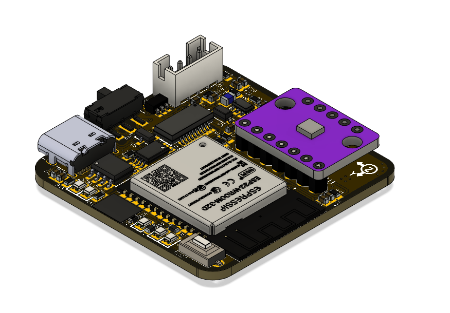
Penempatan komponen utama: ESP32 WROOM, FT231XS USB-UART, TP4056 charger, dan konektor USB-C di sisi atas PCB.
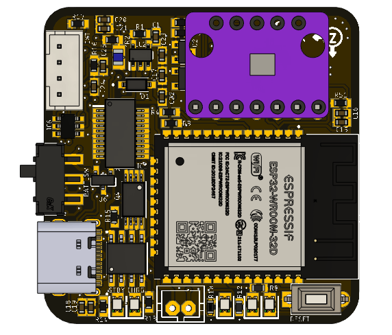
Routing sinyal dan ground plane di sisi bawah. Komponen pasif (resistor, kapasitor) tersebar di kedua sisi.
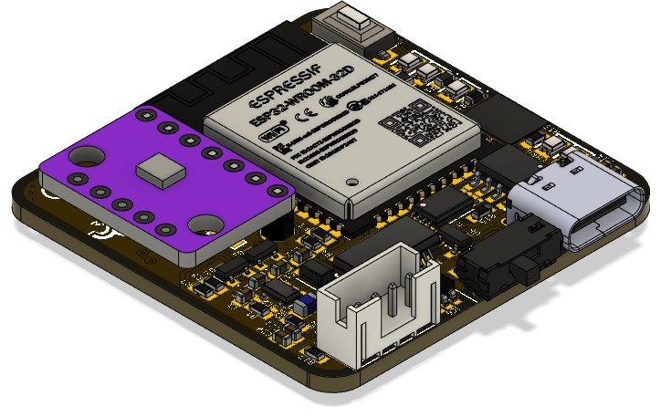
Render 3D menunjukkan posisi header IMU (7-pin), konektor baterai JST-PH (2-pin), dan slide switch on/off.
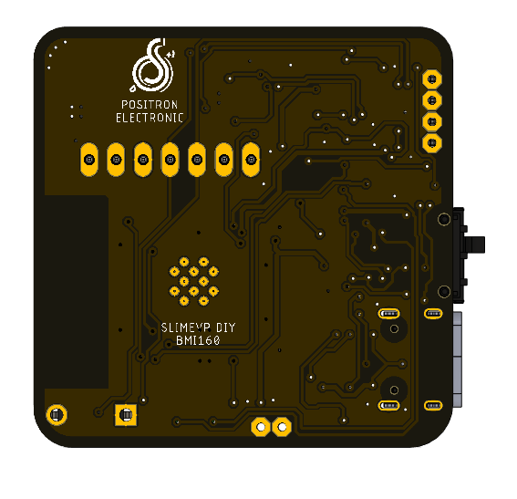
Tampilan sisi bawah PCB dengan komponen SMD dan jalur ground plane.

Dimensi board dan layout pin untuk referensi pemasangan dalam casing.
Casing 3D-Print
Casing dirancang untuk 3D printing (FDM/resin). Desain snap-fit sehingga mudah dibuka-tutup tanpa sekrup.
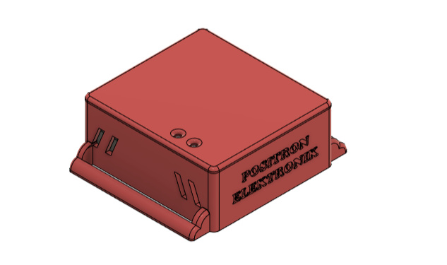
Desain kompak dengan lubang untuk USB-C, slide switch, dan ventilasi.
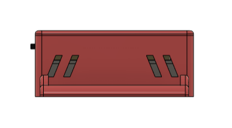
Permukaan atas rata, cocok untuk ditempel pada strap elastic band.
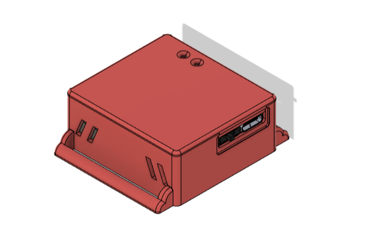
Profil tipis, ketebalan keseluruhan minimal untuk kenyamanan saat dipakai di tubuh.
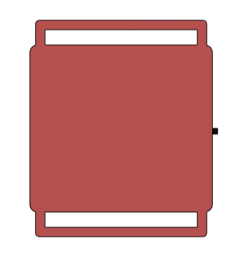
Mekanisme snap-fit antara bagian atas dan bawah casing.
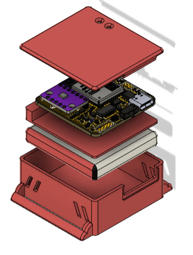
Slot untuk PCB dan space baterai Li-Ion di bagian bawah.
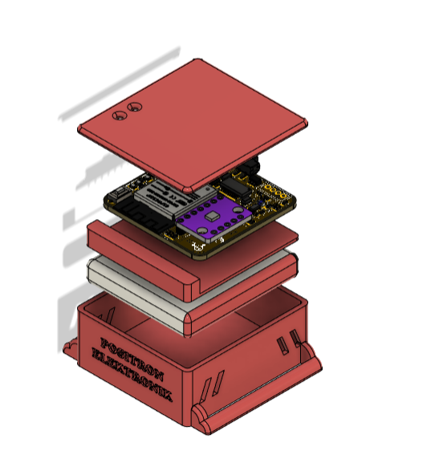
Tampilan keseluruhan casing dari berbagai sudut.
Foto PCB Terpasang
PCB setelah di-solder dengan semua komponen SMD terpasang.
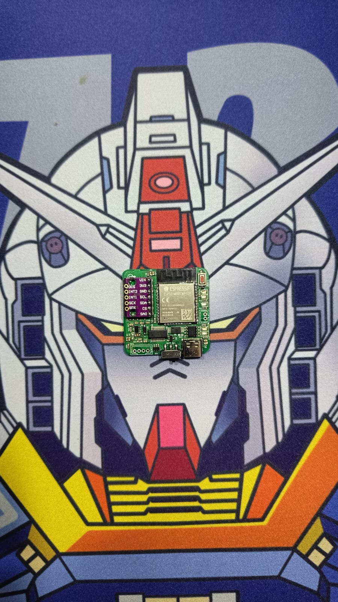
PCB dengan ESP32, FT231XS, TP4056, dan komponen pasif sudah terpasang. Header IMU siap dipasang modul BMI160.
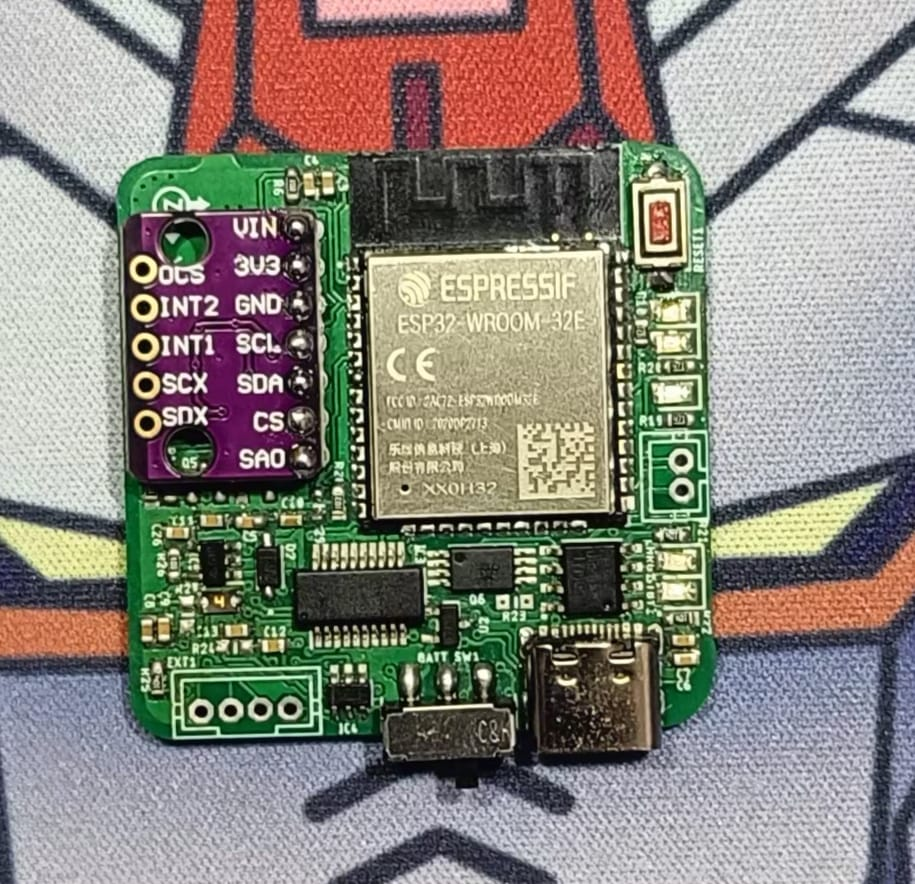
Sisi bawah PCB menunjukkan kualitas soldering komponen SMD.
Produk Jadi (Finished Product)
Tracker yang sudah dirakit lengkap — PCB + baterai di dalam casing 3D-print, siap digunakan untuk full-body tracking.
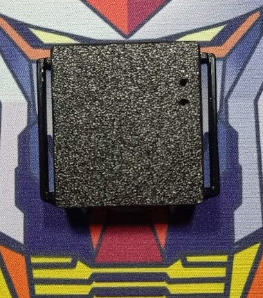
Tracker dalam casing dengan port USB-C terlihat, siap untuk charging dan flashing.
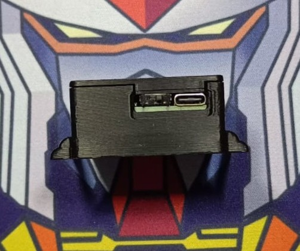
Profil tipis tracker, menunjukkan slide switch on/off di sisi samping.
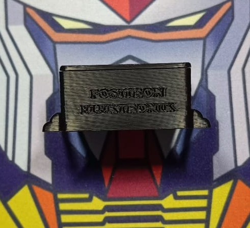
Tampak atas tracker dalam casing — permukaan rata untuk penempatan strap.
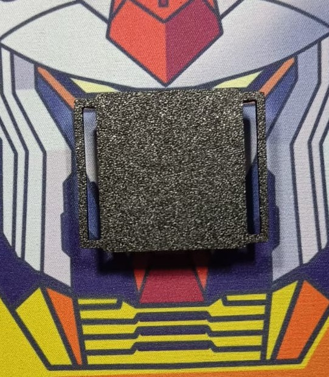
Bagian dalam tracker menunjukkan PCB dan baterai Li-Ion yang terpasang rapi.
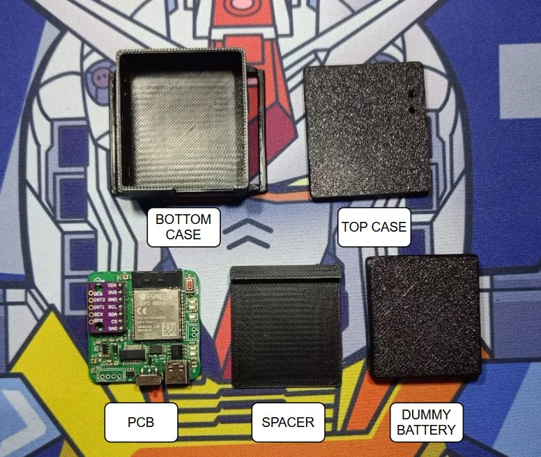
Beberapa tracker siap pakai — untuk full-body tracking dibutuhkan 5-7 unit (tergantung titik tracking yang diinginkan).
🎯 Pendahuluan
Tracker SlimeVR-BMI160 adalah perangkat full-body tracking DIY berbasis ESP32 dan sensor BMI160. Dokumentasi ini memandu Anda melalui dua metode utama:
- 🌐 Web Installer — cara termudah, tanpa instalasi software (direkomendasikan)
- ⚙️ Manual (PlatformIO) — untuk pengembang yang ingin mengompilasi sendiri
📸 Panduan Bergambar Web Installer
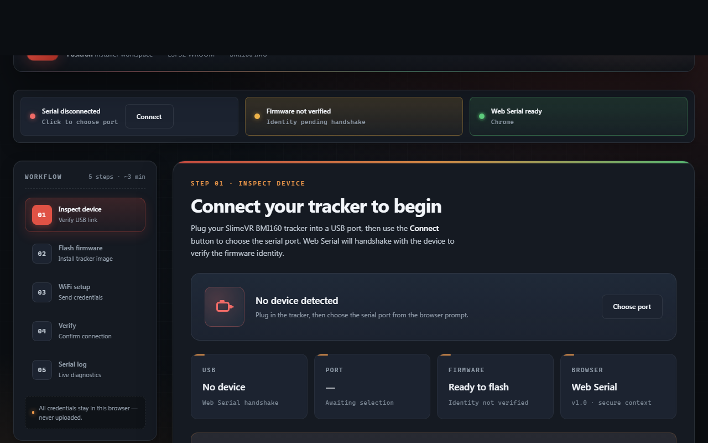
Buka SlimeVR BMI160 Web Installer di Chrome/Edge.
- Colokkan tracker via USB (pastikan kabel data).
- Klik tombol Connect (pojok kiri atas).
- Pilih port serial yang muncul (biasanya "USB Serial Port" atau COMx).
Jika berhasil: status "Serial connected" berwarna hijau dan "Firmware verified" (jika firmware sudah ada).
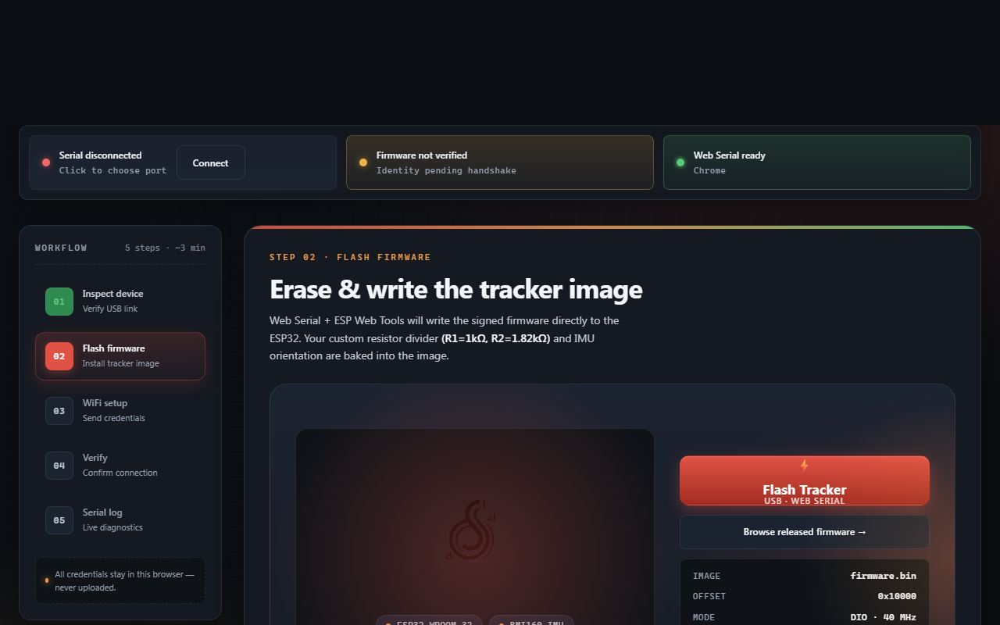
- Pindah ke step 2 (klik "02 Flash firmware" di sidebar).
- Klik tombol Flash Tracker.
- Konfirmasi port dan tunggu hingga selesai (jangan cabut kabel!).
⏱️ Proses flashing berlangsung ±10 detik. Tracker reboot otomatis.
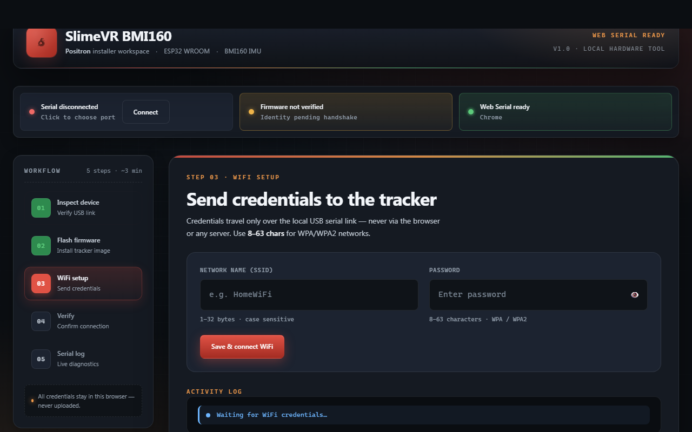
- Pindah ke step 3.
- Masukkan SSID dan Password WiFi Anda.
- Klik Save & connect WiFi.
- Tunggu hingga muncul "Connected" dan alamat IP.
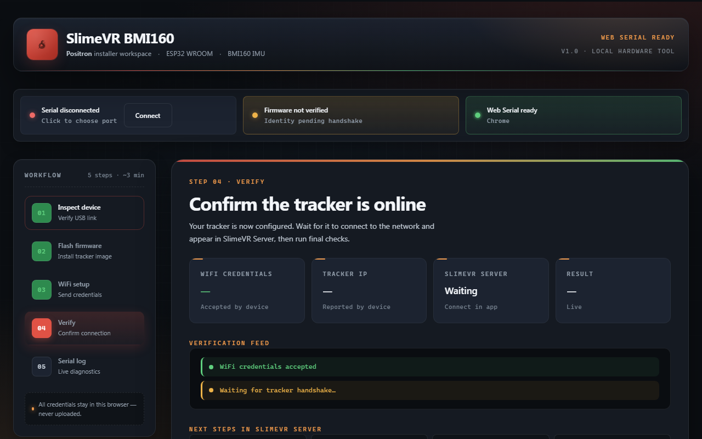
Buka SlimeVR Server di PC — tracker akan muncul otomatis (pastikan satu jaringan).
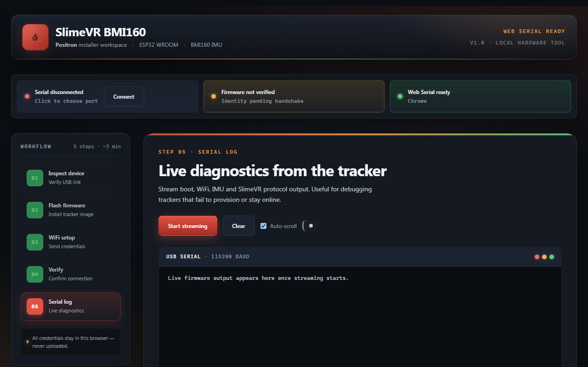
Gunakan step 5 untuk melihat output real-time dari tracker (boot, WiFi, IMU, koneksi server).
⚙️ Metode Manual (PlatformIO)
Prasyarat
- VS Code + ekstensi PlatformIO IDE
- Kabel USB data
- Tracker SlimeVR-BMI160 terhubung
Langkah-langkah
- Clone Repositori
git clone https://github.com/juarendra/SlimeVR-BMI160.git cd SlimeVR-BMI160
- Buka Proyek Firmware
Buka folderFIRMWARE/SlimeVR-Tracker-ESP-0.4.0/di VS Code. PlatformIO akan menginstal dependensi otomatis. - Konfigurasi WiFi (Hardcode)
Bukaplatformio.ini, tambahkan di[env:esp32dev]:build_flags = -DWIFI_SSID='"NAMA_WIFI_ANDA"' -DWIFI_PASSWORD='"PASSWORD_WIFI_ANDA"' - Erase Flash (Opsional)
pio run --target erase
- Upload Firmware
Klik tombol Upload (panah kanan) di toolbar PlatformIO. Tunggu hingga "SUCCESS". - Monitor Serial
Klik ikon Serial Monitor (colokan), pastikan baud rate115200.
Output Serial yang Diharapkan
[20:13:30] [INFO] [main] Starting SlimeVR tracker... [20:13:31] [INFO] [WIFI] Connecting to "NAMA_WIFI_ANDA" [20:13:34] [INFO] [WIFI] WiFi connected. IP: 192.168.1.10 [20:13:34] [INFO] [I2C] Found BMI160 at address 0x68 [20:13:35] [INFO] [SERVER] Connected to server! [20:13:36] [INFO] [OUTPUT:0] Sensor 0 reporting: ...
🔧 Perintah Serial untuk Provisioning (Advanced)
GET INFO— tampilkan informasi perangkat.SET BWIFI <base64_ssid> <base64_pass>— kirim kredensial WiFi. Respon:[WIFI-PROVISION] ACCEPTED[WIFI-PROVISION] CONNECTED <IP>[WIFI-PROVISION] FAILED <reason>
🐛 Troubleshooting Lanjutan
| Masalah | Solusi |
|---|---|
| Sensor tidak terdeteksi | Periksa koneksi I2C, pastikan header BMI160 terpasang. Coba i2cscan. |
| WiFi gagal konek | Pastikan password benar, gunakan jaringan 2.4 GHz. |
| Tracker tidak muncul di server | Pastikan server berjalan dan firewall tidak memblokir. |
| Flashing manual gagal | Periksa driver USB, coba port lain, restart VS Code. |